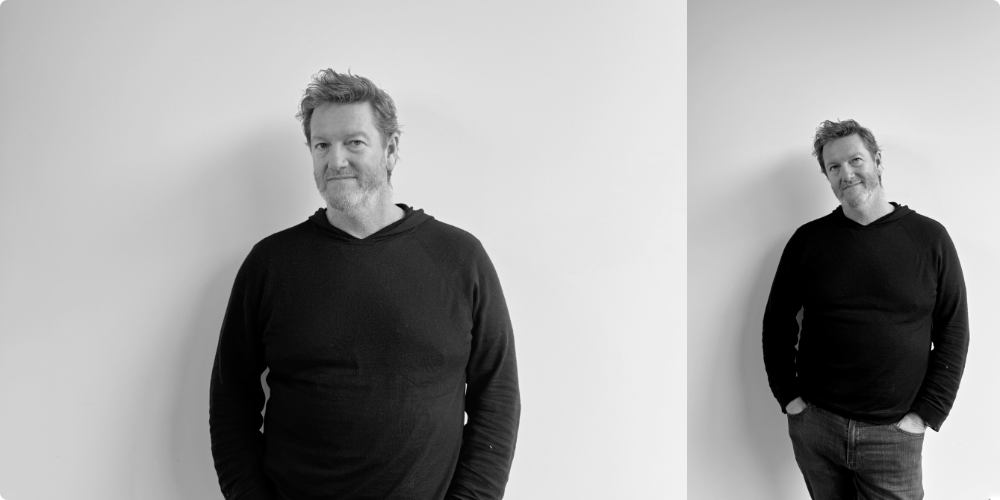

Bruce Falck
Bruce Falck had spent most of his career in ad tech, building incredible machines to serve ads. After he left Twitter in 202x, he decided he wanted to do something different.
Published
June 12th, 2024
Services
Product Concept
Brand Strategy
Brand Design
System Design
Product Design
Communications
Timeline
2022 - 2024
Product
Halcyon.eco

Bruce Falck
Kevin is an experience design leader who helps organizations envision new possibilities, make sound decisions, and execute skillfully. With a strong focus on systems thinking, Kevin excels at applying a holistic approach to com-plex challenges. His expertise encompasses a variety of disciplines, such as research, stra-tegy, experience design, creative direction, cross-functional team management, and bus-iness management. Throughout his career, Kevin has assisted hundreds of organizations in translating customer and business needs into successful product and brand solutions. He has had the privilege of collaborating with some of the world's most renowned com-panies, including Apple, BBC, Microsoft, MoMA, Nike, Google, and TED Conferences.

Kevin Farnham
Kevin is an experience design leader who helps organizations envision new possibilities, make sound decisions, and execute skillfully. With a strong focus on systems thinking, Kevin excels at applying a holistic approach to com-plex challenges. His expertise encompasses a variety of disciplines, such as research, stra-tegy, experience design, creative direction, cross-functional team management, and bus-iness management. Throughout his career, Kevin has assisted hundreds of organizations in translating customer and business needs into successful product and brand solutions. He has had the privilege of collaborating with some of the world's most renowned companies, including Apple, BBC, Microsoft, MoMA, Nike, Google, and TED Conferences.
Part 1
Zero to one
Zero to one
Kevin
“Preparing for this chat, I’ve been going over the work we did over the last year, and it was like, wow — what a crazy and cool trajectory. From basically having a vague initial notion of what this thing could be, to having assigned customers.”
Bruce
“It was company creation in the true sense. I mean, I started working on this thing in April last year, but, you know, that was just me running around, brain-storming carbon trading exchanges, and I didn't lock onto the idea until we built the prototype. I think you may remember that one point where I was like, we need to stop thinking and get an engineer in here because I want to start building this thing.”
During the 1st phase of the program, Bruce hired Jonathan Lewis to spear head the initial product concept and build the first functioning prototype for user testing.
Kevin
"I remember"
Bruce
“I've got these weekly emails that I send myself that I've been doing for a year.”
Part 2
Laying foundations
Laying foundations
Kevin
“You brought us in very early — unusually early in the process.”
Kevin thinks involving early in the process of building a company, a brand and as well as a customer facing product have huge benefits and implications.
Sharing the same DNA, understanding weaknesses and positives of the company will create a more resilient product for the customer
Bruce
“I think the way this all happened makes this project kind of a unicorn. I mean, at that point, we were just sort of chatting as friends, you know. I mean, I'm starting something in climate, Kevin knows a bit about the climate stuff. And it was just like, hey, you want to meet to chat about?”
Kevin
“We just started chatting basically.”
Bruce
“Eventually I started a weekly meeting. I didn’t have any money to pay anyone at that point. [At some point Bruce decides to go all in, and dedicates a big chunk of his budget on the project.] It was a challenge to explain it to the board. And they were like, look, we trust you, but no one's making this kind of an investment in design.”
Part 3
On going way back
On going way back
Bruce
“I think we first met in, I want to say ‘95. Maybe ‘96.”
Kevin
“I was already at Meta in ‘96, so it's almost certainly ‘95."
1995-1996 was a pivotal period for technology, particularly with the rise of the internet and advancements in personal computing.
The internet, once a niche for academics and researchers, was becoming accessible to the general public. User-friendly web browsers like Netscape and AOL made it easier to navigate the web, while dial-up access, though slow by today's standards, connected homes to the online world.
Bruce
“Then in 2013, I was telling my wife I feel like I never see my friends. And so she set up this regular dinner with myself, Kevin, and two other friends, Tony and Simon. And we've been doing that now for almost eleven years. and we haven't missed a quarter.”
Kevin
“It can be dangerous working with friends. But I think we’re doing a good job managing that element of it.”
Part 4
On being purpose-driven
On being purpose-driven
Kevin
“All those years we've known each other, I never thought of you as a big climate guy. And now you’re here starting a company that’s all about climate tech. What happened?”
Bruce
“I’d done a stint back in 2003 in Cleantech, so I worked at a solar energy developer back then. So I know a bit about energy and I'm very passionate about infrastructure. Energy infrastructure underpins everything. It's somewhat arbitrary. But when Andrew said, we need people like you to come work in climate, I'm like, that is appealing to me. And I was done with ads and I was ready for something different.”
Kevin
“Is this like the moment where Steve Jobs asked John Sculley, ‘do you want to sell soda for the rest of your life or do you want to change the world?’”

Steve Jobs famously asked John Sculley, then the CEO of PepsiCo to come to Apple to be its CEO.

Bruce
“I was done with ads and I was ready for something different. I feel really good about working in climate also. It was a little bit like that, yeah. Andrew said it nicely, but he basically said, you should move on from ads and come do something worthwhile.”
Kevin
“How is Halcyon on purpose driven? Like on a practical, day to day level?”

Bruce
“Every single one of our customers is struggling to navigate the energy transition. And every single one of our customers is spending inordinate amount of time understanding energy policy and regulation so that they can kind of move the world forward and we help them do that more efficiently. The way I think about it is we're removing sand from the gears. And if we can help someone get to a good answer in 2 hours versus two days or two weeks, that's going to have a huge impact. And what's actually surprised me as we've dug into this is just how many of these people there are. I've had at least 100 plus customer conversations. Sorry. I've had. I've talked to 100 customers, many of them multiple times.
But when I describe sort of the problem statement, there's not a single person that has said to me, it's not a problem. Not one person has said, like everyone has said, yeah, this is a huge pain point. So you've got all these people working in energy and all these people working on the energy transition, and I don't know how many there are, but there's, I mean, there's hundreds and hundreds of thousands. So if you can save two or 300,000 people 2 hours a week, that's actually a massive impact. We need to, at some point, think about how we want to articulate that.”